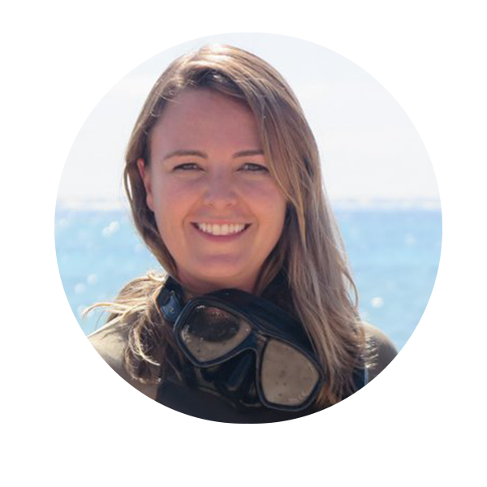

DR EMMA KENNEDY

Dr. Emma Kennedy is a research scientist specializing in coral reefs, with an interest in climate
change impacts on reef communities. Originally trained as a zoologist, she completed her PhD in
Caribbean reef ecology at University of Exeter in the UK, in 2015.
Dr. Emma Kennedy is a research scientist specializing in coral reefs, with an interest in climate
change impacts on reef communities. Originally trained as a zoologist, she completed her PhD in
Caribbean reef ecology at University of Exeter in the UK, in 2015. Much of Emma’s research
involves making detailed �eld observations. Over the past �ve years she has led over 23 diving
research expeditions from the Coral Triangle to the Caribbean. She currently works at the
Australian Institute of Marine Sciences.
DR HELEN FOX
Dr. Helen E. Fox is a coral reef ecologist by training. She has more than 20 years’ experience working at the boundary of science and conservation, with geographic expertise in Indonesia and the Coral Triangle.
Dr. Helen E. Fox is a coral reef ecologist by training. She has more than 20 years’ experience working at the boundary of science and conservation, with geographic expertise in Indonesia and the Coral Triangle. Her work includes investigating links between marine protected area (MPA) management and governance, ecological impacts, and human well-being. She currently serves as the Conservation Science Director at the Coral Reef Alliance.